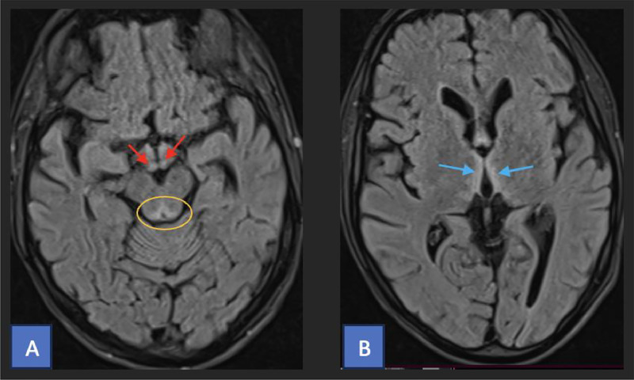
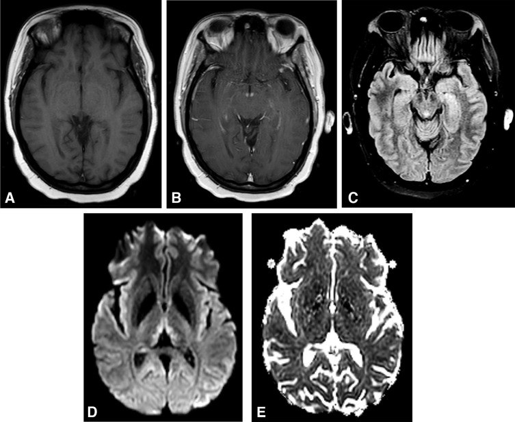
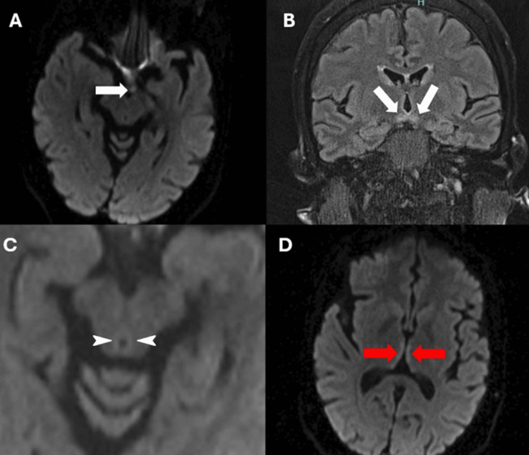
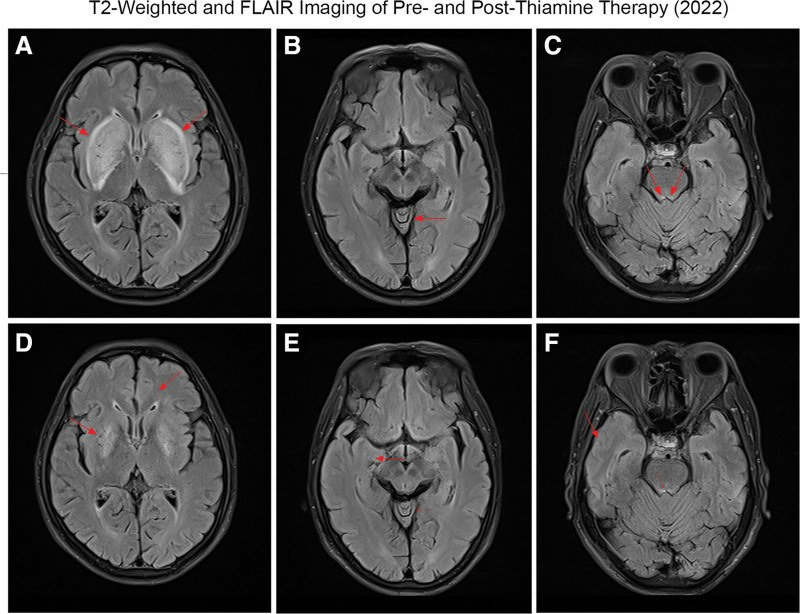

3033 — Bệnh não Wernicke & thiếu thiamin: "tam chứng chỉ 10–33%", MRI quanh cống Sylvius và liều thiamin cứu được
Tags: pattern:phu-doi-xung pattern:phu-quanh-cong-sylvius pattern:phu-doi-thi pattern:han-che-khuếch-tan vung:nao score:Caine protocol:MRI-so-nao protocol:thiamin
Mức chắc chắn (certainty): tổng hợp y văn (literature synthesis) — ghép tổng quan WE 2023 (PMC10393093), tổng quan WKS không do rượu 2026 (PMC13489584), tổng quan có hệ thống WE sau phẫu thuật tiêu hóa 2026 (PMC13365056), RCT liều thiamin 2022 (PMC9321884), tổng quan thần kinh–nhãn khoa (PMC7335288), 3 ca có ảnh MRI (PMC11324805, PMC12506538, PMC13008232) và dữ liệu mô bệnh học–hình ảnh (PMC12535404).
Câu hỏi thực hành: nam 52 tuổi, uống rượu nhiều, ăn kém 3 tuần nay, vào viện vì lú lẫn, đi loạng choạng, mắt nhìn đôi và rung giật nhãn cầu. Người trực đề nghị chụp MRI sọ trước, chờ kết quả rồi mới truyền thiamin. Câu hỏi: chờ có đúng không, MRI sẽ thấy gì, thể không điển hình trông ra sao, và liều thiamin nào đủ? Bài chốt theo ba trục: (1) điều trị không chờ hình ảnh — nghi WE là truyền thiamin ngay, vì 85% người sống sót mang di chứng WKS mạn và ~20% tử vong nếu không điều trị; (2) hình ảnh — T2/FLAIR đối xứng quanh cống Sylvius + đồi thị trong + thể vú, DWI hạn chế ở thể cấp, ngấm thể vú; (3) gamut đối xứng — phân biệt với nhồi máu động mạch Percheron, huyết khối tĩnh mạch não sâu, hủy myelin thẩm thấu, bệnh não gan, CJD. Nối 3029 – ARIA-E/ARIA-H, 3031 – PRES, 216 – Huyết khối tĩnh mạch não, 211 – Đột quỵ não, 1902 – Bệnh não gan cấp.
1. Tổng quan bệnh học – cơ chế hình ảnh: vì sao thiếu B1 lại chọn đúng đồi thị và thể vú
- Sinh hóa cốt lõi: thiamin (vitamin B1) → thiamin diphosphate (TDP) là cofactor của pyruvate dehydrogenase (PDH), α-ketoglutarate dehydrogenase (α-KGDH) và transketolase. Thiếu TDP → giảm sản xuất ATP từ glucose, ứ lactate, sụp chuyển hóa oxy hóa ở tế bào thần kinh và tế bào hình sao.
- Dự trữ và thời gian: cơ thể chỉ dự trữ thiamin 2–3 tuần; biểu hiện lâm sàng thường sau 4–6 tuần thiếu hụt (PMC10393093, PMC13489584).
- TẠI SAO đúng vùng đó (selective vulnerability): các nhân chuyển hóa glucose rất cao — thể vú, đồi thị trong (mediodorsal/anterior), chất xám quanh cống Sylvius, mảng mái, nhân tiền đình, thùy nhộng tiểu não — phụ thuộc PDH/α-KGDH nhất. Thiếu ATP → phù tế bào hình sao (astrocytic edema) → phá hàng rào máu–não → phù độc tế bào + phù vận mạch; glutamate ngoại bào tăng gây độc tế bào thần kinh.
- TẠI SAO T2/FLAIR sáng: nước nội bào/ngoại bào tăng → kéo dài T2; tổn thương đối xứng vì cả hai bên đều thiếu cùng một enzyme.
- TẠI SAO DWI hạn chế: phù độc tế bào làm giảm khuếch tán nước → DWI sáng + ADC tối ở thể cấp; nhưng không phải ca nào cũng hạn chế — ca do ung thư dạ dày (PMC12506538) không hạn chế khuếch tán, nên DWI âm không loại trừ WE.
- TẠI SAO thể vú ngấm thuốc: phá hàng rào máu–não tại thể vú → ngấm tương phản (hình 3033_we-mri ô B); dấu hiệu này đặc hiệu nhưng không nhạy.
- TẠI SAO có thể chảy máu hoặc hoại tử: tổn thương nội mô mao mạch nặng → xuất huyết đồi thị (thể hiếm, tiên lượng xấu) và teo thể vú/đồi thị về sau.
- Di chứng mô học: thể vú giảm thể tích 60–80% ở 96–100% ca WKS; mất neuron đồi thị lưng giữa 48% ở WE → 64% ở KS; vỏ trán lưng bên giảm ~20% (PMC12535404). Đây là lý do “phù hồi phục nhưng trí nhớ có thể không”.
- Ngưỡng định lượng phải nhớ:
- Tổn thương Wernicke tại tử thi: 0,4–2,8% dân số chung (PMC10393093); chỉ ≤ 6% ca không do rượu được chẩn đoán trước tử vong (PMC13489584).
- Tam chứng đầy đủ: 16–33% (PMC10393093); ~10% trong tổng quan có hệ thống (PMC13365056); < 15% ở ca không do rượu (PMC13489584). Đừng chờ đủ tam chứng.
- Tiêu chuẩn Caine (2/4): thiếu dinh dưỡng, bất thường vận nhãn/rung giật, rối loạn tiểu não, rối loạn tri giác/trí nhớ. Dùng 2/4 nâng tỷ lệ nhận diện từ 23% lên 85% (PMC9693280, PMC10393093).
- MRI: nhạy 53%, đặc hiệu 93% (PMC10434319) → MRI âm không loại trừ.
- Tử vong ~20% nếu không điều trị (PMC13489584); ~85% người sống sót WE có di chứng nhận thức mạn (WKS) (PMC8242940, PMC9693280).
- Phác đồ: UK (RCP): 500 mg IV × 3 lần/ngày trong 2–3 ngày, sau đó 250 mg/ngày; EFNS: 200 mg IV mỗi 8 giờ đến khi hết triệu chứng; Mỹ: 100 mg parenteral 3–7 ngày rồi uống (PMC10393093). RCT 2022 (127 ca): 100 vs 300 vs 500 mg × 3/ngày trong 5 ngày — không thấy lợi ích rõ của liều cao (PMC9321884), nhưng không có bằng chứng để hạ liều ở ca nặng; luôn sửa magnesi và thiếu hụt B khác.
2. Mẫu hình + chẩn đoán phân biệt theo vị trí (gamut)
- Mẫu hình cốt lõi: rối loạn tri giác + rung giật nhãn cầu/liệt vận nhãn + mất thăng bằng; khởi phát bán cấp (ngày–tuần), bối cảnh rượu, nôn kéo dài, dinh dưỡng kém, phẫu thuật tiêu hóa, mang thai nôn nhiều, lọc máu, nuôi dưỡng tĩnh mạch kéo dài.
- Gamut theo hình ảnh — tổn thương đối xứng quanh não thất III/cống Sylvius:
- Thiếu thiamin (WE) — thể vú + đồi thị trong + quanh cống; DWI hạn chế ở thể cấp, ngấm thể vú.
- Nhồi máu động mạch Percheron (artery of Percheron) — nhồi máu đồi thị cạnh đường giữa hai bên ± trung não, DWI sáng/ADC tối rõ, khởi phát đột ngột, có yếu tố mạch máu, không có ngấm thể vú.
- Huyết khối tĩnh mạch não sâu (deep CVT) — đồi thị phù ± xuất huyết, tắc xoang thẳng/vein of Galen, đau đầu dữ dội, ngấm màng não; chẩn đoán bằng CTV/MRV.
- Hủy myelin thẩm thấu (osmotic demyelination) — cầu não trung tâm điển hình, thể ngoài cầu ở đồi thị/hạch nền; bối cảnh sửa Na⁺ quá nhanh; không ngấm thể vú.
- Bệnh não gan — T1 sáng đối xứng ở hạch nền (globus pallidus), không hạn chế khuếch tán, amoniac cao, rung giật gan bàn tay.
- CJD — “cortical ribboning” + hạch nền, DWI sáng, teo nhanh, myoclonus, EEG/PCR 14-3-3.
- U thần kinh đệm/lymphoma đồi thị hai bên — choán chỗ, phù xung quanh, không đối xứng hoàn toàn, không hồi phục sau thiamin.
- Mnemonic "WERNICKE": Wernicke (thể vú), Edema quanh cống, Rượu/dinh dưỡng, Nystagmus, Increased T2/FLAIR, Confusion, Korsakoff (di chứng), Enhancement thể vú.

A: FLAIR — thể vú tăng tín hiệu (mũi tên đỏ), chất xám quanh cống (vòng vàng). B: FLAIR — đồi thị trong hai bên tăng tín hiệu (mũi tên xanh). Ở ca này tổn thương không ngấm và không hạn chế khuếch tán. Nguồn: Radiol Case Rep 2025 (PMC12506538), CC BY-NC-ND 4.0.3. Bảng so sánh phân biệt (ma trận đối chiếu)
| Thực thể (entity) | Hình ảnh điển hình | Chốt vào (rule-in) | Chốt loại (rule-out) | Gợi ý xác nhận |
|---|---|---|---|---|
| Bệnh não Wernicke (thiếu thiamin) | T2/FLAIR đối xứng: thể vú, đồi thị trong, quanh cống Sylvius, mảng mái; DWI hạn chế ở thể cấp; ngấm thể vú | Bối cảnh thiếu dinh dưỡng/rượu/nôn kéo dài + 2/4 Caine; thể vú + quanh cống đối xứng; đáp ứng sau thiamin | Tổn thương một bên, có choán chỗ, không đối xứng → u/nhồi máu; DWI âm không loại trừ; không có bối cảnh thiếu hụt → nghĩ nguyên nhân khác | Truyền thiamin ngay (không chờ MRI); MRI sọ có/không tương phản; nồng độ thiamin máu không dùng để loại trừ |
| Nhồi máu động mạch Percheron | Đồi thị cạnh đường giữa hai bên ± trung não, hình chữ V; DWI sáng/ADC tối rõ, không ngấm thể vú | Khởi phát đột ngột + yếu tố mạch máu; hạn chế khuếch tán theo lãnh thổ; không đáp ứng thiamin | Tổn thương thể vú/quanh cống đối xứng + bối cảnh dinh dưỡng → WE; không có hạn chế khuếch tán → không phải nhồi máu cấp | MRA/CTA, siêu âm tim, theo dõi thời gian; không trì hoãn thiamin nếu nghi WE |
| Huyết khối tĩnh mạch não sâu | Đồi thị phù ± xuất huyết, tắc xoang thẳng/vein of Galen, ngấm màng não, phù lan | Đau đầu dữ dội + phù đồi thị hai bên + huyết khối xoang trên CTV/MRV | Không tắc xoang + tổn thương thể vú → WE; không xuất huyết, không tắc → loại CVT | CTV/MRV bắt buộc; D-dimer; kháng đông nếu xác định |
| Hủy myelin thẩm thấu | Cầu não trung tâm hình "thỏi son"; thể ngoài cầu: đồi thị, hạch nền | Sửa Na⁺ > 8–10 mmol/L/24 giờ hoặc tăng Na⁺ nhanh; tổn thương cầu trung tâm | Không có bối cảnh Na⁺; tổn thương thể vú → WE | Điện giải đồ, tốc độ sửa Na⁺, MRI lặp |
| Bệnh não gan | T1 sáng đối xứng hạch nền, không hạn chế khuếch tán; teo não nhẹ | Xơ gan + amoniac cao + rung giật gan bàn tay; T1 sáng globus pallidus | T1 không sáng hạch nền; DWI hạn chế → WE/nhồi máu | Amoniac, chức năng gan, đáp ứng lactulose |
| CJD | Cortical ribboning + hạch nền, DWI sáng, teo nhanh | Myoclonus + sa sút nhanh + DWI vỏ/hạch nền; RT-QuIC/14-3-3 | Tổn thương chỉ đồi thị/thể vú đối xứng, hồi phục sau thiamin → WE | EEG, RT-QuIC, MRI lặp 2–4 tuần |
| U thần kinh đệm/lymphoma đồi thị | Khối choán chỗ, phù xung quanh, bất đối xứng, ngấm thuốc dạng nốt | Hiệu ứng choán chỗ + bất đối xứng + ngấm không đều | Đối xứng hoàn toàn + không choán chỗ + hồi phục → WE | MRI tương phản, PET, sinh thiết |

A: T1 trước tiêm bình thường. B: T1 sau tiêm — ngấm thể vú. C: FLAIR — tăng tín hiệu chất xám quanh cống. D: DWI — đồi thị trong sáng. E: ADC — hạn chế khuếch tán nhẹ (phù độc tế bào). Nguồn: Eye Brain 2020 (PMC7335288), CC BY-NC 4.0.4. Protocol chụp + hệ phân độ/điểm chuẩn hóa
- Nguyên tắc vàng: điều trị trước, hình ảnh sau. Nghi WE trên lâm sàng → truyền thiamin ngay (không chờ MRI, không chờ nồng độ thiamin máu); nếu bệnh nhân hạ đường huyết/tăng glucose, truyền thiamin trước hoặc cùng glucose để tránh làm nặng thêm.
- MRI sọ (không cần cản quang là đủ cho chẩn đoán): T2/FLAIR (đồi thị, thể vú, quanh cống, mảng mái), DWI + ADC (phù độc tế bào), T1 sau tiêm (ngấm thể vú), SWI (xuất huyết). Lát 3 mm qua vùng đồi thị–trung não; thêm hệ thần kinh trung ương toàn bộ nếu nghi tổn thương vỏ/dây thần kinh sọ (thể không điển hình).
- Xét nghiệm: nồng độ thiamin máu (whole blood thiamine diphosphate) trước khi truyền nếu lấy được — nhưng không chờ kết quả; magnesi, kali, phospho, glucose, lactate, amoniac, chức năng gan/thận; điện giải đồ để loại hủy myelin thẩm thấu; CTV/MRV nếu nghi huyết khối xoang.
- Phân tầng xử trí theo Caine: 2/4 tiêu chuẩn → điều trị như WE (không cần đủ tam chứng). Bảng điểm Caine không thay thế đánh giá lâm sàng ở ca không do rượu (chưa được thẩm định đầy đủ).
- Liều và đường dùng (người lớn):
- UK (RCP): 500 mg IV × 3 lần/ngày trong 2–3 ngày; nếu đáp ứng → 250 mg/ngày đến khi hết triệu chứng; sau đó uống 100 mg × 3/ngày trong thời gian còn nguy cơ.
- EFNS: 200 mg IV mỗi 8 giờ đến khi cải thiện.
- Mỹ: 100 mg parenteral 3–7 ngày, sau đó uống.
- RCT 2022: 100/300/500 mg × 3/ngày × 5 ngày — không khác biệt rõ; không hạ liều ở ca nặng, và sửa magnesi vì thiếu magnesi làm giảm đáp ứng thiamin (PMC9321884).
- Phòng bệnh ở nhóm nguy cơ: trước và sau phẫu thuật béo phì, nôn nhiều khi mang thai, nuôi dưỡng tĩnh mạch kéo dài, nghiện rượu → bổ sung thiamin theo phác đồ, không chờ triệu chứng.
- Theo dõi: đánh giá lại vận nhãn, dáng đi, trí nhớ mỗi ngày; MRI lặp 1–2 tuần nếu không cải thiện để loại u/CVT/nhồi máu; tầm soát nguyên nhân nền (rượu, bariatric, ung thư, nôn thai, lọc máu).
flowchart TD
A[Nghi WE: lú lẫn + rung giật/vận nhãn + mất thăng bằng] --> B{Đủ 2/4 tiêu chuẩn Caine?}
B -->|Có| C[TRUYỀN THIAMIN NGAY — không chờ MRI]
B -->|Không| D{Vẫn nghi trên lâm sàng?}
D -->|Có| C
D -->|Không| E[Tìm nguyên nhân khác]
C --> F[MRI sọ: FLAIR + DWI/ADC + T1 sau tiêm + SWI]
F --> G{Thể vú/quanh cống/đồi thị đối xứng?}
G -->|Có| H[Tiếp tục thiamin + sửa magnesi]
G -->|Không| I[Loại Percheron/CVT/hủy myelin/u; vẫn điều trị nếu lâm sàng mạnh]
H --> J[Đánh giá lại mỗi ngày; MRI lặp nếu không cải thiện]
5. Biến thể bình thường và cạm bẫy
- "Không đủ tam chứng" là quy luật, không phải ngoại lệ: tam chứng đầy đủ chỉ 10–33%; ở ca không do rượu lại càng < 15%. Chờ đủ tam chứng = bỏ sót.
- MRI âm không loại trừ: nhạy 53%, đặc hiệu 93%; DWI âm cũng gặp (ca PMC12506538 không hạn chế khuếch tán). Chẩn đoán là lâm sàng + đáp ứng thiamin.
- Thể không điển hình ở ca không do rượu: tổn thương vỏ não, tiểu não, nhân dây thần kinh sọ; "lentiform fork sign" ở hạch nền (ca lọc máu — PMC13008232) — dễ nhầm bệnh não ure huyết hoặc hủy myelin thẩm thấu. Đáp ứng sau thiamin là chốt.
- Nhầm với nhồi máu Percheron: cả hai đều đồi thị hai bên; khác ở khởi phát đột ngột + hạn chế khuếch tán rõ + yếu tố mạch máu (Percheron) vs bối cảnh dinh dưỡng + thể vú/quanh cống + hồi phục sau thiamin (WE). Nếu nghi cả hai → vẫn truyền thiamin, không chờ.
- Nhầm với bệnh não gan: T1 sáng hạch nền là chìa khóa; WE không có T1 sáng globus pallidus.
- Bỏ sót thể vú vì lát cắt dày: thể vú ~3 mm (ca PMC12506538) — lát > 3 mm dễ bỏ; dùng lát mỏng 1–3 mm qua vùng dưới đồi.
- Ngấm thể vú chỉ là dấu hiệu hỗ trợ: không nhạy; không ngấm không loại trừ.
- Thiamin trước glucose: ở bệnh nhân suy dinh dưỡng, truyền glucose trước thiamin có thể khởi phát/làm nặng WE; luôn thiamin trước hoặc đồng thời.
- Thiếu magnesi: không đáp ứng thiamin nếu không sửa magnesi — kiểm tra và bù.
6. Tự lượng giá — Blind Quiz ngay trên trang tĩnh
Ca 1 — Nam 52 tuổi, nghiện rượu, lú lẫn + đi loạng choạng + rung giật nhãn cầu. Nhìn 5 ô MRI, mô tả trước.
- Gợi ý lâm sàng: ăn uống kém 3 tuần, không sốt, không chấn thương.
- Câu hỏi: Dấu hiệu ở thể vú, quanh cống và đồi thị? Chuỗi xung nào chốt phù độc tế bào? 3 chẩn đoán phân biệt?
Bấm để hiện đáp án (findings + chẩn đoán)
- Dấu hiệu: ngấm thể vú (B), tăng tín hiệu FLAIR chất xám quanh cống (C), DWI sáng đồi thị trong (D), ADC tối nhẹ (E) → phù độc tế bào.
- Chẩn đoán: bệnh não Wernicke — thiếu thiamin làm sụp PDH/α-KGDH, phù tế bào hình sao ở vùng chuyển hóa cao.
- Phân biệt: nhồi máu Percheron (đột ngột, DWI rõ, không ngấm thể vú), huyết khối tĩnh mạch não sâu (đau đầu, tắc xoang trên MRV), hủy myelin thẩm thấu (sửa Na⁺ nhanh, cầu não).
- Xử trí: truyền thiamin ngay theo phác đồ, không chờ MRI; bù magnesi.
- Nguồn ảnh: Eye Brain 2020 (PMC7335288), CC BY-NC 4.0.
Ca 2 — Nữ 53 tuổi, nôn nhiều, sụt cân, nhìn mờ hai bên và đi yếu. Xem DWI/FLAIR.

- Câu hỏi: Dấu hiệu ở A/B/C/D? Vì sao DWI quan trọng ở đây? Có cần chờ xét nghiệm thiamin không?
Bấm để hiện đáp án
- A: hạn chế khuếch tán thể vú (mũi tên trắng); B: FLAIR thể vú hai bên; C–D: đồi thị trong hạn chế khuếch tán.
- DWI quan trọng vì phù độc tế bào là dấu hiệu sớm, trước khi T2/FLAIR rõ; nhưng DWI âm không loại trừ.
- Không chờ nồng độ thiamin: truyền thiamin ngay khi nghi WE; xét nghiệm chỉ để hồi cứu.
- Nguồn ảnh: Cureus 2024 (PMC11324805), CC BY 4.0.
Ca 3 — Nam 60 tuổi, lọc máu chu kỳ, đi loạng choạng tái phát sau ngừng thiamin. Xem 6 ô MRI.

- Câu hỏi: Dấu hiệu "lentiform fork" là gì? Vì sao dễ nhầm ở bệnh nhân lọc máu? Điều gì chốt chẩn đoán?
Bấm để hiện đáp án
- Lentiform fork sign: tăng tín hiệu đối xứng hạch nền với phần viền ngoài được bảo tồn, tạo hình "cái nĩa"; gặp trong bệnh não do ure huyết, nhiễm toan ceton, hủy myelin thẩm thấu — không đặc hiệu.
- Ở ca này, tổn thương kèm thùy nhộng tiểu não, cầu não lưng và tái phát sau ngừng thiamin, giảm sau bổ sung → WE thể không điển hình.
- Chốt: bối cảnh thiếu thiamin + tổn thương đối xứng + hồi phục sau thiamin; không dựa vào một dấu hiệu đơn lẻ.
- Nguồn ảnh: Medicine (Baltimore) 2026 (PMC13008232), CC BY 4.0.
Bài liên quan chéo
- 211 – Đột quỵ não: nhồi máu & vùng lãnh thổ mạch
- 216 – Huyết khối tĩnh mạch não (CVST)
- 3029 – ARIA-E/ARIA-H khi dùng kháng thể kháng amyloid
- 3031 – PRES: phù vận mạch đối xứng vùng sau
- 1902 – Bệnh não gan cấp tính
Không dùng để chẩn đoán độc lập khi chưa có người hướng dẫn.